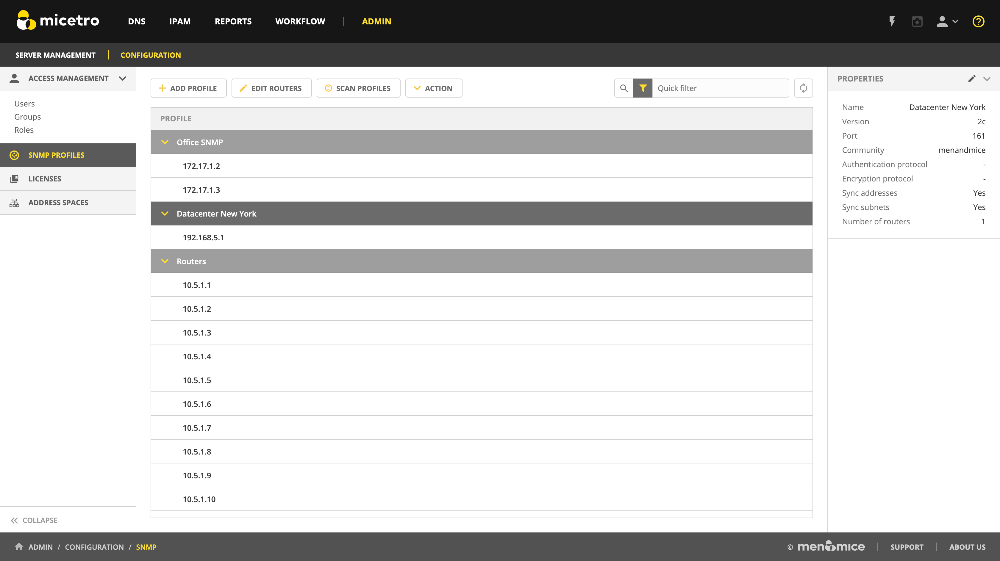

SNMP profiles
The SNMP protocol provides a common mechanism for devices on networks to relay management information. Micetro uses SNMP profiles to determine whether devices that have been discovered on networks are active.
{kind=link}
Note
For configuring SNMP profiles using the Management Console, see Configuring Host Discovery by Querying Routers (Management Console, deprecated).
Create a new SNMP profile
Before a router can be queried it must be placed in an SNMP profile containing the parameters necessary to access the SNMP information on the router.
Note
Multiple routers can share the same SNMP profile.
To create an SNMP profile:
Navigate to Admin –> Configuration –> SNMP Profiles.
Use the Add Profile action from the top bar.
{kind=link}
Enter a profile name and choose the SNMP version to use. (Supported versions are SNMP v1, v2c, and v3.) You can also specify a non-standard port to use for SNMP.
Enter the necessary information to access the router using SNMP. The information is different depending on the SNMP version selected:
For SNMP v1 and v2c:
Community
Enter the SNMP community string (password) to use to access the routers using the profile.
For SNMP v3:
Username
Enter a user name for accessing the routers using the profile.
Authentication
Protocol
Choose the authentication protocol to use. The available protocols are MD5 and SHA.
Password
Enter the authentication password for the routers using the profile.
Encryption
Protocol
Choose the encryption protocol to use. The available protocols are AES and DES.
Password
Enter the authentication password for the routers using the profile.
If needed, disable IP address and subnet synchronization.
Click Next.
Paste or enter the IPv4 address of the router(s) that you want to query using this profile.
Note
Each router’s IP address needs to be on a separate line in the text area.
Click Add profile to save the settings and create the profile.
Edit existing SNMP profile
You can edit an existing SNMP profile, to change settings or modify the routers using it.
Navigate to .
Use the Action –> Edit SNMP Profile action from the top bar or the ellipsis menu to edit a profile’s settings. Use the Edit routers action to modify the list of routers using the profile.
Scanning profiles
SNMP scanning is done automatically in the background by Micetro. Users can initiate a manual scan of all configured profiles to pull ARP cache from the routers if needed.
Use the Scan profiles action from the top bar to manually scan all profiles.
Warning
This might take a long time and can result in higher volumes of traffic.